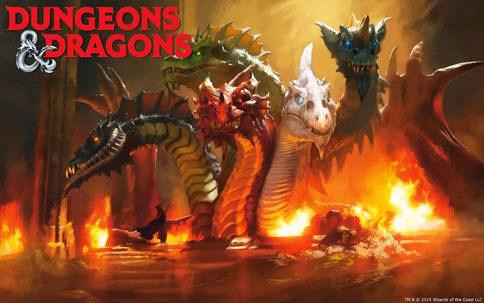

O que é RPG de Mesa?
O RPG de Mesa (Role-playing game, no inglês) é um jogo de interpretação e tabuleiro que você usa diversos dados com várias formas/lados diferentes para criar o rumo da história. Séries como Stranger Things, ou o famigerado desenho dos anos 80, Caverna do Dragão, ou até The Legend of Vox Machina, que é literalmente feita em base com uma campanha de d&d (Dungeons & Dragons) do Critical Role.
O RPG de Mesa é constituído pelo Mestre, e pelos seus jogadores. O mestre cria os problemas e a histórias, enquanto os jogadores são os protagonistas que mudam o mundo. Apenas deixe a sua criatividade fluir!
Como o Site opera?
O site opera de duas formas específicas:
O site em primeira instância serve para ele automatizar a ficha de um personagem seu em específico, com ele criando uma ficha útil com base dos status postos por você.
A segunda instância do site lhe oferece desafios para deixar mais complexo e difícil a criação do seu personagem, dando-lhe regras que você deve seguir na sua ficha.
Exemplos de RPG de Mesa: